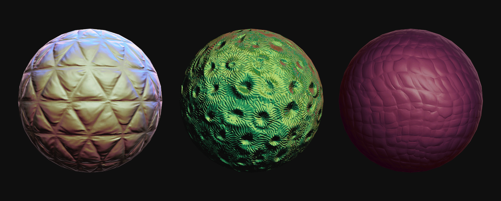
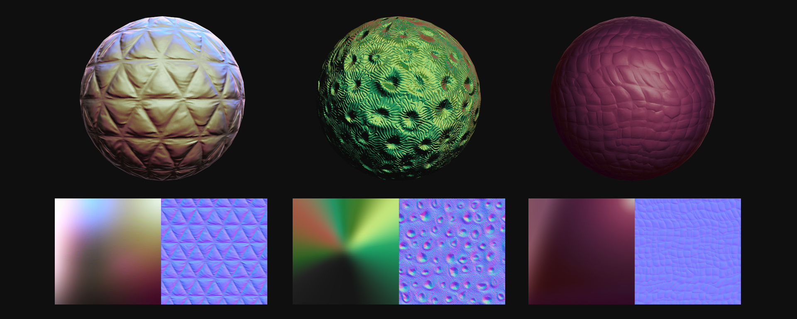

이 커스텀 메테리얼의 핵심은 UV를 변형시키는 것이다.
위의 예시는 float2(NdotViewDir, halfNdotL) 형식으로 설정되어있다. X 축만 보면 fresnel공식이기 때문에 텍스쳐의 x좌표가 0에
가까울 수록 구의 외곽 색을 결정한다. Y축을 보면 빛과 마주볼수록 1에 가까운 값을 주기 때문에 텍스쳐의 상단부분이 빛과 마주보는 면의 색을 결정한다.
즉, mesh의 가장 밝은 부분은 텍스쳐의 우측상단의 색이 표현된다.
굉장히 간단한 방법이지만 이러한 셰이더로 자동차 페인트나, 코팅된 카드와 같이 다양한 색이 공존하는 재질을 만드는데 유용할 것 같다.

△